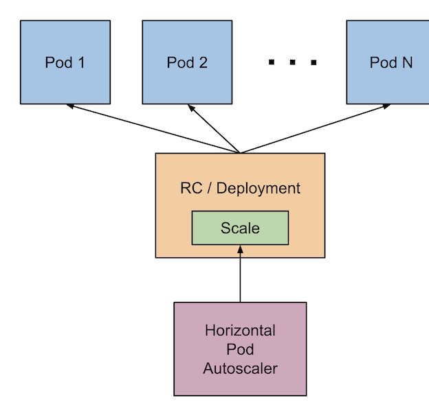
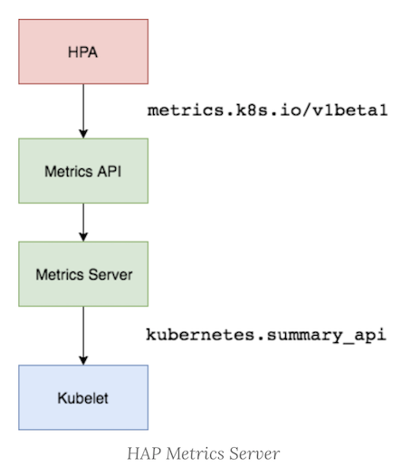
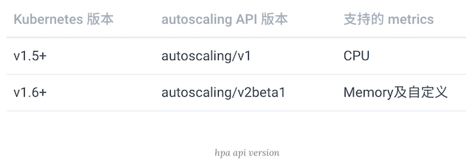
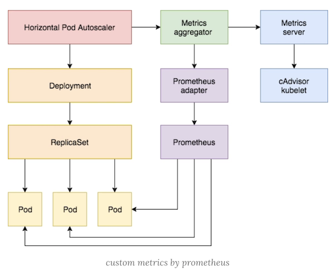
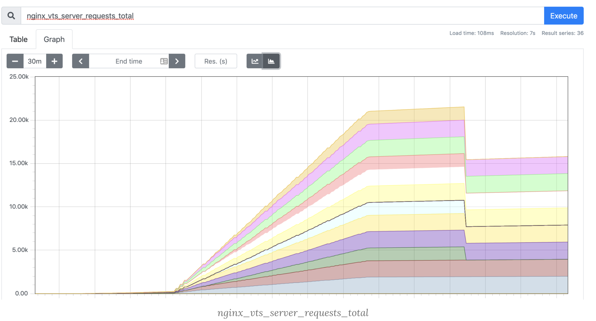
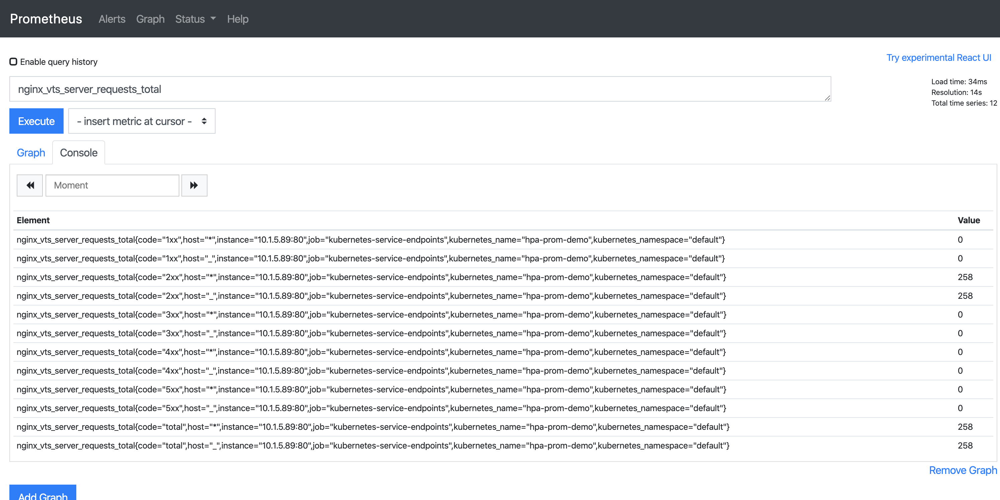
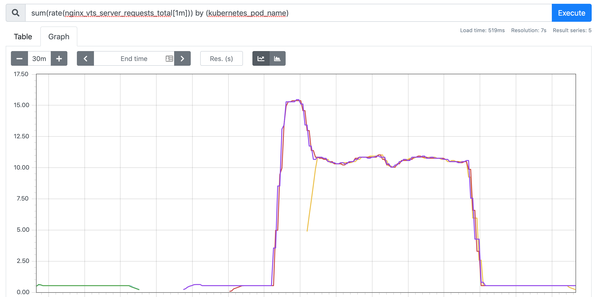

第六节 Kubernetes HPA 使用详解(Metrics Server/CPU/Mem/adapater)
- Metrics Server
- 基于 CPU 的 HPA
- 基于内存 的 HPA
- 基于自定义指标 和 Prometheus-adapater 的 HPA
在前面的学习中我们使用用一个 kubectl scale 命令可以来实现 Pod 的扩缩容功能，但是这个毕竟是完全手动操作的，要应对线上的各种复杂情况，我们需要能够做到自动化去感知业务，来自动进行扩缩容。
为此，Kubernetes 也为我们提供了这样的一个资源对象：Horizontal Pod Autoscaling（Pod 水平自动伸缩），简称HPA，HPA 通过监控分析一些控制器控制的所有 Pod 的负载变化情况来确定是否需要调整 Pod 的副本数量，这是 HPA 最基本的原理：

我们可以简单的通过 kubectl autoscale 命令来创建一个 HPA 资源对象，HPA Controller默认30s轮询一次（可通过kube-controller-manager 的--horizontal-pod-autoscaler-sync-period 参数进行设置），查询指定的资源中的 Pod 资源使用率，并且与创建时设定的值和指标做对比，从而实现自动伸缩的功能。
1 Metrics Server
在 HPA 的第一个版本中，我们需要 Heapster 提供 CPU 和内存指标，在 HPA v2 过后就需要安装 Metrcis Server了，Metrics Server 可以通过标准的 Kubernetes API把监控数据暴露出来，有了 Metrics Server 之后，我们就完全可以通过标准的 Kubernetes API 来访问我们想要获取的监控数据了：
https://10.96.0.1/apis/metrics.k8s.io/v1beta1/namespaces/<namespace-name>/pods/<pod-name>
比如当我们访问上面的 API 的时候，我们就可以获取到该 Pod的资源数据，这些数据其实是来自于kubelet的 Summary API 采集而来的。
不过需要说明的是我们这里可以通过标准的 API 来获取资源监控数据，并不是因为 Metrics Server 就是 APIServer 的一部分，而是通过 Kubernetes 提供的 Aggregator 汇聚插件来实现的，是独立于 APIServer 之外运行的。

1-1 聚合 API
Aggregator 允许开发人员编写一个自己的服务，把这个服务注册到 Kubernetes 的 APIServer 里面去，这样我们就可以像原生的 APIServer 提供的 API 使用自己的 API 了，我们把自己的服务运行在 Kubernetes 集群里面，然后 Kubernetes 的 Aggregator 通过 Service 名称就可以转发到我们自己写的 Service 里面去了。
这样这个聚合层就带来了很多好处：
- 增加了
API的扩展性，开发人员可以编写自己的API服务来暴露他们想要的API。 - 丰富了
API，核心kubernetes团队阻止了很多新的API提案，通过允许开发人员将他们的API作为单独的服务公开，这样就无须社区繁杂的审查了。 - 开发分阶段实验性
API，新的API可以在单独的聚合服务中开发，当它稳定之后，在合并会APIServer就很容易了。 - 确保新
API遵循Kubernetes约定，如果没有这里提出的机制，社区成员可能会被迫推出自己的东西，这样很可能造成社区成员和社区约定不一致。
1-2 安装
所以现在我们要使用 HPA，就需要在集群中安装 Metrics Server 服务，要安装 Metrics Server 就需要开启 Aggregator，因为 Metrics Server 就是通过该代理进行扩展的，不过我们集群是通过 Kubeadm 搭建的，默认已经开启了，如果是二进制方式安装的集群，需要单独配置 kube-apsierver 添加如下所示的参数：
--requestheader-client-ca-file=<path to aggregator CA cert>
--requestheader-allowed-names=aggregator
--requestheader-extra-headers-prefix=X-Remote-Extra-
--requestheader-group-headers=X-Remote-Group
--requestheader-username-headers=X-Remote-User
--proxy-client-cert-file=<path to aggregator proxy cert>
--proxy-client-key-file=<path to aggregator proxy key>
- --requestheader-allowed-names=front-proxy-client
如果 kube-proxy 没有和 APIServer 运行在同一台主机上，那么需要确保启用了如下 kube-apsierver 的参数：
--enable-aggregator-routing=true
对于这些证书的生成方式，我们可以查看官方文档：https://github.com/kubernetes-sigs/apiserver-builder-alpha/blob/master/docs/concepts/auth.md。
Aggregator 聚合层启动完成后，就可以来安装Metrics Server 了，我们可以获取该仓库的官方安装资源清单：
$ git clone https://github.com/kubernetes-incubator/metrics-server
$ cd metrics-server
$ kubectl apply -f deploy/1.8+/
在部署之前，修改 metrcis-server/deploy/1.8+/metrics-server-deployment.yaml的镜像地址为：
containers:
- name: metrics-server
image: gcr.azk8s.cn/google_containers/metrics-server-amd64:v0.3.6
等部署完成后，可以查看 Pod 日志是否正常：
$ kubectl get pods -n kube-system -l k8s-app=metrics-server
NAME READY STATUS RESTARTS AGE
metrics-server-6886856d7c-g5k6q 1/1 Running 0 2m39s
$ kubectl logs -f metrics-server-6886856d7c-g5k6q -n kube-system
......
E1119 09:05:57.234312 1 manager.go:111] unable to fully collect metrics: [unable to fully scrape metrics from source kubelet_summary:jxi-node1: unable to fetch metrics from Kubelet jxi-node1 (jxi-node1): Get https://jxi-node1:10250/stats/summary?only_cpu_and_memory=true: dial tcp: lookup jxi-node1 on 10.96.0.10:53: no such host, unable to fully scrape metrics from source kubelet_summary:jxi-node4: unable to fetch metrics from Kubelet jxi-node4 (jxi-node4): Get https://jxi-node4:10250/stats/summary?only_cpu_and_memory=true: dial tcp: lookup jxi-node4 on 10.96.0.10:53: no such host, unable to fully scrape metrics from source kubelet_summary:jxi-node3: unable to fetch metrics from Kubelet jxi-node3 (jxi-node3): Get https://jxi-node3:10250/stats/summary?only_cpu_and_memory=true: dial tcp: lookup jxi-node3 on 10.96.0.10:53: no such host, unable to fully scrape metrics from source kubelet_summary:jxi-master: unable to fetch metrics from Kubelet jxi-master (jxi-master): Get https://jxi-master:10250/stats/summary?only_cpu_and_memory=true: dial tcp: lookup jxi-master on 10.96.0.10:53: no such host, unable to fully scrape metrics from source kubelet_summary:jxi-node2: unable to fetch metrics from Kubelet jxi-node2 (jxi-node2): Get https://jxi-node2:10250/stats/summary?only_cpu_and_memory=true: dial tcp: lookup jxi-node2 on 10.96.0.10:53: no such host]
我们可以发现 Pod 中出现了一些错误信息：xxx: no such host，我们看到这个错误信息一般就可以确定是DNS解析不了造成的，我们可以看到 Metrics Server 会通过 kubelet 的 10250 端口获取信息，使用的是 hostname，我们部署集群的时候在节点的 /etc/hosts里面添加了节点的 hostname 和 ip 的映射，
但是是我们的 Metrics Server 的 Pod 内部并没有这个 hosts 信息，当然也就不识别 hostname 了，要解决这个问题，有两种方法：
第一种方法就是在集群内部的 DNS 服务里面添加上 hostname 的解析，比如我们这里集群中使用的是 CoreDNS，我们就可以去修改下 CoreDNS 的 Configmap 信息，添加上 hosts 信息：
$ kubectl edit configmap coredns -n kube-system
apiVersion: v1
data:
Corefile: |
.:53 {
errors
health
hosts { # 添加集群节点hosts隐射信息
10.151.30.11 jxi-master
10.151.30.57 jxi-node3
10.151.30.59 jxi-node4
10.151.30.22 jxi-node1
10.151.30.23 jxi-node2
fallthrough
}
kubernetes cluster.local in-addr.arpa ip6.arpa {
pods insecure
upstream
fallthrough in-addr.arpa ip6.arpa
}
prometheus :9153
proxy . /etc/resolv.conf
cache 30
reload
}
kind: ConfigMap
metadata:
creationTimestamp: 2019-05-18T11:07:46Z
name: coredns
namespace: kube-system
这样当在集群内部访问集群的 hostname 的时候就可以解析到对应的 ip 了，另外一种方法就是在 metrics-server 的启动参数中修改 kubelet-preferred-address-types 参数，如下：
args:
- --cert-dir=/tmp
- --secure-port=4443
- --kubelet-preferred-address-types=InternalIP
我们这里使用第二种方式，然后重新安装：
$ kubectl get pods -n kube-system -l app=metrics-server
NAME READY STATUS RESTARTS AGE
metric-metrics-server-6d4d4f6dc4-c8hhl 1/1 Running 0 2d11h
$ kubectl logs -f metric-metrics-server-58fc94d9f-jlxcb -n kube-system
......
E1119 09:05:57.234312 1 manager.go:111] unable to fully collect metrics: [unable to fully scrape metrics from source kubelet_summary:jxi-node1: unable to fetch metrics from Kubelet jxi-node1 (jxi-node1): Get https://jxi-node1:10250/stats/summary?only_cpu_and_memory=true: dial tcp: lookup jxi-node1 on 10.96.0.10:53: no such host, unable to fully scrape metrics from source kubelet_summary:jxi-node4: unable to fetch metrics from Kubelet jxi-node4 (jxi-node4): Get https://jxi-node4:10250/stats/summary?only_cpu_and_memory=true: dial tcp: lookup jxi-node4 on 10.96.0.10:53: no such host, unable to fully scrape metrics from source kubelet_summary:jxi-node3: unable to fetch metrics from Kubelet jxi-node3 (jxi-node3): Get https://jxi-node3:10250/stats/summary?only_cpu_and_memory=true: dial tcp: lookup jxi-node3 on 10.96.0.10:53: no such host, unable to fully scrape metrics from source kubelet_summary:jxi-master: unable to fetch metrics from Kubelet jxi-master (jxi-master): Get https://jxi-master:10250/stats/summary?only_cpu_and_memory=true: dial tcp: lookup jxi-master on 10.96.0.10:53: no such host, unable to fully scrape metrics from source kubelet_summary:jxi-node2: unable to fetch metrics from Kubelet jxi-node2 (jxi-node2): Get https://jxi-node2:10250/stats/summary?only_cpu_and_memory=true: dial tcp: lookup jxi-node2 on 10.96.0.10:53: no such host]
因为部署集群的时候，CA 证书并没有把各个节点的 IP 签上去，所以这里 Metrics Server 通过 IP 去请求时，提示签的证书没有对应的 IP（错误：x509: cannot validate certificate for 10.151.30.22 because it doesn’t contain any IP SANs），我们可以添加一个--kubelet-insecure-tls参数跳过证书校验：
args:
- --cert-dir=/tmp
- --secure-port=4443
- --kubelet-insecure-tls
- --kubelet-preferred-address-types=InternalIP
然后再重新安装即可成功！可以通过如下命令来验证：
$ kubectl apply -f deploy/1.8+/
$ kubectl get pods -n kube-system -l k8s-app=metrics-server
NAME READY STATUS RESTARTS AGE
metrics-server-5d4dbb78bb-6klw6 1/1 Running 0 14s
$ kubectl logs -f metrics-server-5d4dbb78bb-6klw6 -n kube-system
I1119 09:10:44.249092 1 serving.go:312] Generated self-signed cert (/tmp/apiserver.crt, /tmp/apiserver.key)
I1119 09:10:45.264076 1 secure_serving.go:116] Serving securely on [::]:4443
$ kubectl get apiservice | grep metrics
v1beta1.metrics.k8s.io kube-system/metrics-server True 9m
$ kubectl get --raw "/apis/metrics.k8s.io/v1beta1/nodes"
{"kind":"NodeMetricsList","apiVersion":"metrics.k8s.io/v1beta1","metadata":{"selfLink":"/apis/metrics.k8s.io/v1beta1/nodes"},"items":[{"metadata":{"name":"jxi-node3","selfLink":"/apis/metrics.k8s.io/v1beta1/nodes/jxi-node3","creationTimestamp":"2019-11-19T09:11:53Z"},"timestamp":"2019-11-19T09:11:38Z","window":"30s","usage":{"cpu":"240965441n","memory":"3004360Ki"}},{"metadata":{"name":"jxi-node4","selfLink":"/apis/metrics.k8s.io/v1beta1/nodes/jxi-node4","creationTimestamp":"2019-11-19T09:11:53Z"},"timestamp":"2019-11-19T09:11:37Z","window":"30s","usage":{"cpu":"167036681n","memory":"2574664Ki"}},{"metadata":{"name":"jxi-master","selfLink":"/apis/metrics.k8s.io/v1beta1/nodes/jxi-master","creationTimestamp":"2019-11-19T09:11:53Z"},"timestamp":"2019-11-19T09:11:38Z","window":"30s","usage":{"cpu":"350907350n","memory":"2986716Ki"}},{"metadata":{"name":"jxi-node1","selfLink":"/apis/metrics.k8s.io/v1beta1/nodes/jxi-node1","creationTimestamp":"2019-11-19T09:11:53Z"},"timestamp":"2019-11-19T09:11:39Z","window":"30s","usage":{"cpu":"1319638039n","memory":"2094376Ki"}},{"metadata":{"name":"jxi-node2","selfLink":"/apis/metrics.k8s.io/v1beta1/nodes/jxi-node2","creationTimestamp":"2019-11-19T09:11:53Z"},"timestamp":"2019-11-19T09:11:36Z","window":"30s","usage":{"cpu":"320381888n","memory":"3270368Ki"}}]}
$ kubectl top nodes
NAME CPU(cores) CPU% MEMORY(bytes) MEMORY%
jxi-master 351m 17% 2916Mi 79%
jxi-node1 1320m 33% 2045Mi 26%
jxi-node2 321m 8% 3193Mi 41%
jxi-node3 241m 6% 2933Mi 37%
jxi-node4 168m 4% 2514Mi 32%
现在我们可以通过 kubectl top 命令来获取到资源数据了，证明 Metrics Server 已经安装成功了。
2 基于 CPU
现在我们用 Deployment 来创建一个 Nginx Pod，然后利用 HPA 来进行自动扩缩容。资源清单如下所示：（hpa-demo.yaml）
apiVersion: apps/v1
kind: Deployment
metadata:
name: hpa-demo
spec:
selector:
matchLabels:
app: nginx
template:
metadata:
labels:
app: nginx
spec:
containers:
- name: nginx
image: nginx
ports:
- containerPort: 80
然后直接创建 Deployment：
$ kubectl apply -f hpa-demo.yaml
deployment.apps/hpa-demo created
现在我们来创建一个 HPA 资源对象，可以使用kubectl autoscale命令来创建：
kubectl autoscale deployment hpa-demo --cpu-percent=10 --min=1 --max=10
horizontalpodautoscaler.autoscaling/hpa-demo autoscaled
$ kubectl get hpa
NAME REFERENCE TARGETS MINPODS MAXPODS REPLICAS AGE
hpa-demo Deployment/hpa-demo <unknown>/10% 1 10 0 12s
此命令创建了一个关联资源 hpa-demo 的 HPA，最小的 Pod 副本数为1，最大为10。HPA 会根据设定的 cpu 使用率（10%）动态的增加或者减少 Pod 数量。
当然我们依然还是可以通过创建 YAML 文件的形式来创建 HPA 资源对象。如果我们不知道怎么编写的话，可以查看上面命令行创建的HPA的YAML文件：
$ kubectl get hpa hpa-demo -o yaml
apiVersion: autoscaling/v1
kind: HorizontalPodAutoscaler
metadata:
annotations:
autoscaling.alpha.kubernetes.io/conditions: '[{"type":"AbleToScale","status":"True","lastTransitionTime":"2020-04-07T15:38:07Z","reason":
"SucceededGetScale","message":"the
HPA controller was able to get the target''s current scale"},{"type":"ScalingActive","status":"False","lastTransitionTime":"2020-04-07T
15:38:07Z","reason":"FailedGetResourceMetric","message":"the
HPA was unable to compute the replica count: missing request for cpu"}]'
creationTimestamp: "2020-04-07T15:37:52Z"
name: hpa-demo
namespace: default
resourceVersion: "2321037"
selfLink: /apis/autoscaling/v1/namespaces/default/horizontalpodautoscalers/hpa-demo
uid: d24084ba-f050-41d3-a524-51fa1ed76d78
spec:
maxReplicas: 10
minReplicas: 1
scaleTargetRef:
apiVersion: apps/v1
kind: Deployment
name: hpa-demo
targetCPUUtilizationPercentage: 10
status:
currentReplicas: 1
desiredReplicas: 0
然后我们可以根据上面的 YAML 文件就可以自己来创建一个基于 YAML 的 HPA 描述文件了。但是我们发现上面信息里面出现了一些 Fail 信息，我们来查看下这个 HPA 对象的信息：
$ kubectl describe hpa hpa-demo
Name: hpa-demo
Namespace: default
Labels: <none>
Annotations: <none>
CreationTimestamp: Tue, 07 Apr 2020 23:37:52 +0800
Reference: Deployment/hpa-demo
Metrics: ( current / target )
resource cpu on pods (as a percentage of request): <unknown> / 10%
Min replicas: 1
Max replicas: 10
Deployment pods: 1 current / 0 desired
Conditions:
Type Status Reason Message
---- ------ ------ -------
AbleToScale True SucceededGetScale the HPA controller was able to get the target's current scale
ScalingActive False FailedGetResourceMetric the HPA was unable to compute the replica count: missing request for cpu
Events:
Type Reason Age From Message
---- ------ ---- ---- -------
Warning FailedComputeMetricsReplicas 36s (x12 over 3m21s) horizontal-pod-autoscaler invalid metrics (1 invalid out of 1), first error is: failed to get cpu utilization: missing request for cpu
Warning FailedGetResourceMetric 21s (x13 over 3m21s) horizontal-pod-autoscaler missing request for cpu
我们可以看到上面的事件信息里面出现了 failed to get cpu utilization: missing request for cpu 这样的错误信息。这是因为我们上面创建的 Pod 对象没有添加 request资源声明，这样导致 HPA 读取不到 CPU 指标信息，所以如果要想让 HPA 生效，对应的 Pod 资源必须添加requests` 资源声明，更新我们的资源清单文件：
apiVersion: apps/v1
kind: Deployment
metadata:
name: hpa-demo
spec:
selector:
matchLabels:
app: nginx
template:
metadata:
labels:
app: nginx
spec:
containers:
- name: nginx
image: nginx
ports:
- containerPort: 80
resources:
requests:
memory: 50Mi
cpu: 50m
然后重新更新 Deployment，重新创建 HPA 对象：
$ kubectl apply -f hpa-demo.yaml
deployment.apps/hpa-demo configured
$ kubectl get pods -o wide -l app=nginx
NAME READY STATUS RESTARTS AGE IP NODE NOMINATED NODE READINESS GATES
hpa-demo-75f94c5d7-ncg5f 1/1 Running 0 16s 10.1.5.71 docker-desktop <none> <none>
hpa-demo-85ff79dd56-mc7mq 0/1 Terminating 0 34m 10.1.5.70 docker-desktop <none> <none>
$ kubectl delete hpa hpa-demo
horizontalpodautoscaler.autoscaling "hpa-demo" deleted
$ kubectl autoscale deployment hpa-demo --cpu-percent=10 --min=1 --max=10
horizontalpodautoscaler.autoscaling/hpa-demo autoscaled
$ kubectl describe hpa hpa-demo
Name: hpa-demo
Namespace: default
Labels: <none>
Annotations: <none>
CreationTimestamp: Wed, 08 Apr 2020 09:33:15 +0800
Reference: Deployment/hpa-demo
Metrics: ( current / target )
resource cpu on pods (as a percentage of request): 0% (0) / 10%
Min replicas: 1
Max replicas: 10
Deployment pods: 1 current / 1 desired
Conditions:
Type Status Reason Message
---- ------ ------ -------
AbleToScale True ScaleDownStabilized recent recommendations were higher than current one, applying the highest recent recommendation
ScalingActive True ValidMetricFound the HPA was able to successfully calculate a replica count from cpu resource utilization (percentage of request)
ScalingLimited False DesiredWithinRange the desired count is within the acceptable range
Events: <none>
$ kubectl get hpa
NAME REFERENCE TARGETS MINPODS MAXPODS REPLICAS AGE
hpa-demo Deployment/hpa-demo 0%/10% 1 10 1 91s
现在可以看到 HPA 资源对象已经正常了，现在我们来增大负载进行测试，我们来创建一个 busybox 的 Pod，并且循环访问上面创建的 Pod：
$ kubectl get pod -l app=nginx -o wide
NAME READY STATUS RESTARTS AGE IP NODE NOMINATED NODE READINESS GATES
hpa-demo-69968bb59f-dxjd7 1/1 Running 0 7m16s 10.1.5.75 docker-desktop <none> <none>
kubectl run -it --image busybox test-hpa --restart=Never --rm /bin/sh
If you don't see a command prompt, try pressing enter.
/ # while true; do wget -q -O- http://10.1.5.75; done
$ kubectl get hpa
NAME REFERENCE TARGETS MINPODS MAXPODS REPLICAS AGE
hpa-demo Deployment/hpa-demo 264%/10% 1 10 8 7m36s
]$ kubectl get pods -l app=nginx --watch
NAME READY STATUS RESTARTS AGE
hpa-demo-69968bb59f-4624m 1/1 Running 0 41s
hpa-demo-69968bb59f-4h6lh 1/1 Running 0 11s
hpa-demo-69968bb59f-7dw9d 1/1 Running 0 26s
hpa-demo-69968bb59f-dxjd7 1/1 Running 0 10m
hpa-demo-69968bb59f-ggmgw 1/1 Running 0 41s
hpa-demo-69968bb59f-nnsm7 1/1 Running 0 26s
hpa-demo-69968bb59f-np6fc 1/1 Running 0 26s
hpa-demo-69968bb59f-tkbzb 1/1 Running 0 41s
hpa-demo-69968bb59f-x8x9r 1/1 Running 0 26s
hpa-demo-69968bb59f-zcnp7 0/1 ContainerCreating 0 11s
hpa-demo-69968bb59f-zcnp7 1/1 Running 0 13s
我们可以看到已经自动拉起了很多新的 Pod，最后定格在了我们上面设置的 10 个 Pod，同时查看资源 hpa-demo 的副本数量，副本数量已经从原来的1变成了10个：
$ kubectl get deployment hpa-demo
NAME READY UP-TO-DATE AVAILABLE AGE
hpa-demo 10/10 10 10 20m
查看 HPA 资源的对象了解工作过程：
$ kubectl describe hpa hpa-demo
Name: hpa-demo
Namespace: default
Labels: <none>
Annotations: <none>
CreationTimestamp: Wed, 08 Apr 2020 09:33:15 +0800
Reference: Deployment/hpa-demo
Metrics: ( current / target )
resource cpu on pods (as a percentage of request): 10% (5m) / 10%
Min replicas: 1
Max replicas: 10
Deployment pods: 10 current / 10 desired
Conditions:
Type Status Reason Message
---- ------ ------ -------
AbleToScale True ScaleDownStabilized recent recommendations were higher than current one, applying the highest recent recommendation
ScalingActive True ValidMetricFound the HPA was able to successfully calculate a replica count from cpu resource utilization (percentage of request)
ScalingLimited True TooManyReplicas the desired replica count is more than the maximum replica count
Events:
Type Reason Age From Message
---- ------ ---- ---- -------
Normal SuccessfulRescale 89s horizontal-pod-autoscaler New size: 4; reason: cpu resource utilization (percentage of request) above target
Normal SuccessfulRescale 74s horizontal-pod-autoscaler New size: 8; reason: cpu resource utilization (percentage of request) above target
Normal SuccessfulRescale 59s horizontal-pod-autoscaler New size: 10; reason: cpu resource utilization (percentage of request) above target
同样的这个时候我们来关掉 busybox 来减少负载，然后等待一段时间观察下 HPA 和 Deployment 对象：
$ kubectl get hpa
NAME REFERENCE TARGETS MINPODS MAXPODS REPLICAS AGE
hpa-demo Deployment/hpa-demo 0%/10% 1 10 1 14m
$ kubectl get deployment hpa-demo
NAME READY UP-TO-DATE AVAILABLE AGE
hpa-demo 1/1 1 1 24m
从
Kubernetes v1.12版本开始我们可以通过设置kube-controller-manager组件的--horizontal-pod-autoscaler-downscale-stabilization参数来设置一个持续时间，用于指定在当前操作完成后，HPA必须等待多长时间才能执行另一次缩放操作。默认为5分钟，也就是默认需要等待5分钟后才会开始自动缩放。
可以看到副本数量已经由 10 变为 1，当前我们只是演示了 CPU 使用率这一个指标，在后面的课程中我们还会学习到根据自定义的监控指标来自动对 Pod 进行扩缩容。
$ kubectl describe hpa hpa-demo
Name: hpa-demo
Namespace: default
Labels: <none>
Annotations: <none>
CreationTimestamp: Wed, 08 Apr 2020 09:33:15 +0800
Reference: Deployment/hpa-demo
Metrics: ( current / target )
resource cpu on pods (as a percentage of request): 0% (0) / 10%
Min replicas: 1
Max replicas: 10
Deployment pods: 1 current / 1 desired
Conditions:
Type Status Reason Message
---- ------ ------ -------
AbleToScale True ReadyForNewScale recommended size matches current size
ScalingActive True ValidMetricFound the HPA was able to successfully calculate a replica count from cpu resource utilization (percentage of request)
ScalingLimited True TooFewReplicas the desired replica count is less than the minimum replica count
Events:
Type Reason Age From Message
---- ------ ---- ---- -------
Normal SuccessfulRescale 11m horizontal-pod-autoscaler New size: 4; reason: cpu resource utilization (percentage of request) above target
Normal SuccessfulRescale 11m horizontal-pod-autoscaler New size: 8; reason: cpu resource utilization (percentage of request) above target
Normal SuccessfulRescale 10m horizontal-pod-autoscaler New size: 10; reason: cpu resource utilization (percentage of request) above target
Normal SuccessfulRescale 4m23s horizontal-pod-autoscaler New size: 1; reason: All metrics below target
[Jacob@i515190:~/Devops_sap/k8s_cka/CKAD]$ kubectl describe hpa hpa-demo
3 基于内存
HorizontalPodAutoscaler 是 Kubernetes autoscaling API 组的资源，在当前稳定版本 autoscaling/v1 中只支持基于 CPU指标的缩放。
在 Beta 版本autoscaling/v2beta2，引入了基于内存和自定义指标的缩放。所以我们这里需要使用 Beta 版本的 API。

现在我们用 Deployment 来创建一个 Nginx Pod，然后利用 HPA 来进行自动扩缩容。资源清单如下所示：（hpa-mem-demo.yaml）
apiVersion: apps/v1
kind: Deployment
metadata:
name: hpa-mem-demo
spec:
selector:
matchLabels:
app: nginx
template:
metadata:
labels:
app: nginx
spec:
volumes:
- name: increase-mem-script
configMap:
name: increase-mem-config
containers:
- name: nginx
image: nginx
ports:
- containerPort: 80
volumeMounts:
- name: increase-mem-script
mountPath: /etc/script
resources:
requests:
memory: 50Mi
cpu: 50m
securityContext:
privileged: true
这里和前面普通的应用有一些区别，我们将一个名为 increase-mem-config 的 ConfigMap 资源对象挂载到了容器中，该配置文件是用于后面增加容器内存占用的脚本，配置文件如下所示：（increase-mem-cm.yaml）
apiVersion: v1
kind: ConfigMap
metadata:
name: increase-mem-config
data:
increase-mem.sh: |
#!/bin/bash
mkdir /tmp/memory
mount -t tmpfs -o size=40M tmpfs /tmp/memory
dd if=/dev/zero of=/tmp/memory/block
sleep 60
rm /tmp/memory/block
umount /tmp/memory
rmdir /tmp/memory
$ kubectl apply -f increase-mem-cm.yaml
$ kubectl apply -f hpa-mem-demo.yaml
$ kubectl get pods -l app=nginx
NAME READY STATUS RESTARTS AGE
hpa-mem-demo-66944b79bf-696r8 1/1 Running 0 19s
然后需要创建一个基于内存的 HPA 资源对象：（hpa-mem.yaml）
apiVersion: autoscaling/v2beta1
kind: HorizontalPodAutoscaler
metadata:
name: nginx-hpa
spec:
scaleTargetRef:
apiVersion: apps/v1
kind: Deployment
name: hpa-mem-demo
minReplicas: 1
maxReplicas: 5
metrics:
- type: Resource
resource:
name: memory
targetAverageUtilization: 60
$ kubectl apply -f hpa-mem.yaml
horizontalpodautoscaler.autoscaling/nginx-hpa created
$ kubectl get hpa
NAME REFERENCE TARGETS MINPODS MAXPODS REPLICAS AGE
hpa-demo Deployment/hpa-demo 0%/10% 1 10 1 22m
nginx-hpa Deployment/hpa-mem-demo 4%/60% 1 5 1 15s
到这里证明 HPA 资源对象已经部署成功了，接下来我们对应用进行压测，将内存压上去，直接执行上面我们挂载到容器中的 increase-mem.sh 脚本即可：
$ kubectl exec -it hpa-mem-demo-66944b79bf-696r8 /bin/bash
root@hpa-mem-demo-66944b79bf-696r8:/# ls /etc/script/
increase-mem.sh
root@hpa-mem-demo-66944b79bf-696r8:/# increase-mem.sh
bash: increase-mem.sh: command not found
root@hpa-mem-demo-66944b79bf-696r8:/# source /etc/script/increase-mem.sh
dd: writing to '/tmp/memory/block': No space left on device
81921+0 records in
81920+0 records out
41943040 bytes (42 MB, 40 MiB) copied, 0.14645 s, 286 MB/s
然后打开另外一个终端观察 HPA 资源对象的变化情况：
$ kubectl get hpa
NAME REFERENCE TARGETS MINPODS MAXPODS REPLICAS AGE
nginx-hpa Deployment/hpa-mem-demo 44%/60% 1 5 2 2m45s
$ kubectl describe hpa nginx-hpa
Name: nginx-hpa
Namespace: default
Labels: <none>
Annotations: kubectl.kubernetes.io/last-applied-configuration:
{"apiVersion":"autoscaling/v2beta1","kind":"HorizontalPodAutoscaler","metadata":{"annotations":{},"name":"nginx-hpa","namespace":"default"...
CreationTimestamp: Wed, 08 Apr 2020 09:55:46 +0800
Reference: Deployment/hpa-mem-demo
Metrics: ( current / target )
resource memory on pods (as a percentage of request): 44% (23568384) / 60%
Min replicas: 1
Max replicas: 5
Deployment pods: 2 current / 2 desired
Conditions:
Type Status Reason Message
---- ------ ------ -------
AbleToScale True ReadyForNewScale recommended size matches current size
ScalingActive True ValidMetricFound the HPA was able to successfully calculate a replica count from memory resource utilization (percentage of request)
ScalingLimited False DesiredWithinRange the desired count is within the acceptable range
Events:
Type Reason Age From Message
---- ------ ---- ---- -------
Normal SuccessfulRescale 47s horizontal-pod-autoscaler New size: 2; reason: memory resource utilization (percentage of request) above target
$ kubectl top pod hpa-mem-demo-66944b79bf-f79l2
NAME CPU(cores) MEMORY(bytes)
hpa-mem-demo-66944b79bf-tqrn9 0m 41Mi
可以看到内存使用已经超过了我们设定的 60% 这个阈值了，HPA 资源对象也已经触发了自动扩容，变成了两个副本了：
$ kubectl get pods -l app=nginx
NAME READY STATUS RESTARTS AGE
hpa-mem-demo-66944b79bf-696r8 1/1 Running 0 9m39s
hpa-mem-demo-66944b79bf-f79l2 1/1 Running 0 5m47s
当内存释放掉后，controller-manager 默认5分钟过后会进行缩放，到这里就完成了基于内存的 HPA操作。
4 基于自定义指标
除了基于 CPU 和内存来进行自动扩缩容之外，我们还可以根据自定义的监控指标来进行。
这个我们就需要使用 Prometheus Adapter，Prometheus 用于监控应用的负载和集群本身的各种指标，Prometheus Adapter 可以帮我们使用 Prometheus 收集的指标并使用它们来制定扩展策略，这些指标都是通过 APIServer 暴露的，而且 HPA 资源对象也可以很轻易的直接使用

首先，我们部署一个示例应用，在该应用程序上测试 Prometheus 指标自动缩放，资源清单文件如下所示：（hpa-prome-demo.yaml）
apiVersion: apps/v1
kind: Deployment
metadata:
name: hpa-prom-demo
spec:
selector:
matchLabels:
app: nginx-server
template:
metadata:
labels:
app: nginx-server
spec:
containers:
- name: nginx-demo
image: cnych/nginx-vts:v1.0
resources:
limits:
cpu: 50m
requests:
cpu: 50m
ports:
- containerPort: 80
name: http
---
apiVersion: v1
kind: Service
metadata:
name: hpa-prom-demo
annotations:
prometheus.io/scrape: "true"
prometheus.io/port: "80"
prometheus.io/path: "/status/format/prometheus"
spec:
ports:
- port: 80
targetPort: 80
name: http
selector:
app: nginx-server
type: NodePort
$ kubectl apply -f hpa-prome-demo.yaml
deployment.apps/hpa-prom-demo created
service/hpa-prom-demo created
$ kubectl get pods -l app=nginx-server
NAME READY STATUS RESTARTS AGE
hpa-prom-demo-cddb7b67f-97pqf 1/1 Running 0 95s
$ kubectl get svc
NAME TYPE CLUSTER-IP EXTERNAL-IP PORT(S) AGE
hpa-prom-demo NodePort 10.104.168.230 <none> 80:30339/TCP 109s
部署完成后我们可以使用如下命令测试应用是否正常，以及指标数据接口能够正常获取：
$ curl localhost:30339
<!DOCTYPE html>
<html>
<head>
<title>Welcome to nginx!</title>
<style>
body {
width: 35em;
margin: 0 auto;
font-family: Tahoma, Verdana, Arial, sans-serif;
}
</style>
</head>
<body>
<h1>Welcome to nginx!</h1>
<p>If you see this page, the nginx web server is successfully installed and
working. Further configuration is required.</p>
<p>For online documentation and support please refer to
<a href="http://nginx.org/">nginx.org</a>.<br/>
Commercial support is available at
<a href="http://nginx.com/">nginx.com</a>.</p>
<p><em>Thank you for using nginx.</em></p>
</body>
</html>
$ curl http://localhost:30339/status/format/prometheus
# HELP nginx_vts_info Nginx info
# TYPE nginx_vts_info gauge
nginx_vts_info{hostname="hpa-prom-demo-cddb7b67f-97pqf",version="1.13.12"} 1
# HELP nginx_vts_start_time_seconds Nginx start time
# TYPE nginx_vts_start_time_seconds gauge
nginx_vts_start_time_seconds 1586312884.322
# HELP nginx_vts_main_connections Nginx connections
# TYPE nginx_vts_main_connections gauge
nginx_vts_main_connections{status="accepted"} 4
nginx_vts_main_connections{status="active"} 2
nginx_vts_main_connections{status="handled"} 4
nginx_vts_main_connections{status="reading"} 0
nginx_vts_main_connections{status="requests"} 129
nginx_vts_main_connections{status="waiting"} 1
nginx_vts_main_connections{status="writing"} 1
# HELP nginx_vts_main_shm_usage_bytes Shared memory [ngx_http_vhost_traffic_status] info
# TYPE nginx_vts_main_shm_usage_bytes gauge
nginx_vts_main_shm_usage_bytes{shared="max_size"} 1048575
...
上面的指标数据中，我们比较关心的是 nginx_vts_server_requests_total 这个指标，表示请求总数，是一个 Counter 类型的指标，我们将使用该指标的值来确定是否需要对我们的应用进行自动扩缩容。
code prometheus-additional.yaml
kubectl create secret generic additional-configs --from-file=prometheus-additional.yaml -n monitoring
secret/additional-configs created
$ kubectl get prometheus -n monitoring
NAME VERSION REPLICAS AGE
kube-prom-prometheus-opera-prometheus v2.15.2 1 17d
kubectl edit prometheus kube-prom-prometheus-opera-prometheus -n monitoring
...
securityContext:
fsGroup: 2000
runAsNonRoot: true
runAsUser: 1000
additionalScrapeConfigs:
name: additional-configs
key: prometheus-additional.yaml
serviceAccountName: prometheus-k8s
...
kubectl port-forward svc/prometheus-operated 9090:9090 -n monitoring


接下来我们将 Prometheus-Adapter 安装到集群中，并添加一个规则来跟踪 Pod 的请求，我们可以将 Prometheus 中的任何一个指标都用于 HPA，但是前提是你得通过查询语句将它拿到（包括指标名称和其对应的值）。
这里我们定义一个如下所示的规则：
rules:
- seriesQuery: 'nginx_vts_server_requests_total'
seriesFilters: []
resources:
overrides:
kubernetes_namespace:
resource: namespace
kubernetes_pod_name:
resource: pod
name:
matches: "^(.*)_total"
as: "${1}_per_second"
metricsQuery: (sum(rate(<<.Series>>{<<.LabelMatchers>>}[1m])) by (<<.GroupBy>>))
接下来我们将 Prometheus-Adapter安装到集群中，并添加一个规则来跟踪 Pod 的请求，我们可以将 Prometheus 中的任何一个指标都用于 HPA，但是前提是你得通过查询语句将它拿到（包括指标名称和其对应的值）。
这里我们定义一个如下所示的规则：
rules:
- seriesQuery: 'nginx_vts_server_requests_total'
seriesFilters: []
resources:
overrides:
kubernetes_namespace:
resource: namespace
kubernetes_pod_name:
resource: pod
name:
matches: "^(.*)_total"
as: "${1}_per_second"
metricsQuery: (sum(rate(<<.Series>>{<<.LabelMatchers>>}[1m])) by (<<.GroupBy>>))
这是一个带参数的 Prometheus 查询，其中：
seriesQuery：查询Prometheus的语句，通过这个查询语句查询到的所有指标都可以用于HPAseriesFilters：查询到的指标可能会存在不需要的，可以通过它过滤掉。resources：通过seriesQuery查询到的只是指标，如果需要查询某个Pod的指标，肯定要将它的名称和所在的命名空间作为指标的标签进行查询，resources就是将指标的标签和k8s的资源类型关联起来，最常用的就是pod和namespace。有两种添加标签的方式，一种是overrides，另一种是template。overrides：它会将指标中的标签和k8s资源关联起来。上面示例中就是将指标中的pod和namespace标签和k8s中的pod和namespace关联起来，因为pod和namespace都属于核心api组，所以不需要指定api组。当我们查询某个pod的指标时，它会自动将pod的名称和名称空间作为标签加入到查询条件中。比如nginx: {group: "apps", resource: "deployment"}这么写表示的就是将指标中nginx这个标签和apps这个api组中的deployment资源关联起来；template：通过go模板的形式。比如template: "kube_<<.Group>>_<<.Resource>>"这么写表示，假如<<.Group>>为apps，<<.Resource>>为deployment，那么它就是将指标中kube_apps_deployment标签和deployment资源关联起来。
name：用来给指标重命名的，之所以要给指标重命名是因为有些指标是只增的，比如以total结尾的指标。这些指标拿来做HPA是没有意义的，我们一般计算它的速率，以速率作为值，那么此时的名称就不能以total结尾了，所以要进行重命名。matches：通过正则表达式来匹配指标名，可以进行分组as：默认值为$1，也就是第一个分组。as为空就是使用默认值的意思。
metricsQuery：这就是Prometheus的查询语句了，前面的seriesQuery查询是获得HPA指标。当我们要查某个指标的值时就要通过它指定的查询语句进行了。可以看到查询语句使用了速率和分组，这就是解决上面提到的只增指标的问题Series：表示指标名称LabelMatchers：附加的标签，目前只有pod和namespace两种，因此我们要在之前使用resources进行关联GroupBy：就是pod名称，同样需要使用resources进行关联。
接下来我们通过 Helm Chart来部署 Prometheus Adapter，新建 hpa-prome-adapter-values.yaml 文件覆盖默认的 Values 值，内容如下所示：
rules:
default: false
custom:
- seriesQuery: 'nginx_vts_server_requests_total'
resources:
overrides:
kubernetes_namespace:
resource: namespace
kubernetes_pod_name:
resource: pod
name:
matches: "^(.*)_total"
as: "${1}_per_second"
metricsQuery: (sum(rate(<<.Series>>{<<.LabelMatchers>>}[1m])) by (<<.GroupBy>>))
prometheus:
url: http://kube-prom-prometheus-opera-prometheus.monitoring.svc.cluster.local
这里我们添加了一条 rules 规则，然后指定了 Prometheus 的地址，我们这里是使用了 Operator 部署的 Promethues 集群，所以用 kube-prom-prometheus-opera-prometheus 的地址。使用下面的命令一键安装：
$ helm install prometheus-adapter stable/prometheus-adapter -n monitoring -f hpa-prome-adapter-values.yaml
NAME: prometheus-adapter
LAST DEPLOYED: Wed Apr 8 12:09:13 2020
NAMESPACE: monitoring
STATUS: deployed
REVISION: 1
TEST SUITE: None
NOTES:
prometheus-adapter has been deployed.
In a few minutes you should be able to list metrics using the following command(s):
kubectl get --raw /apis/custom.metrics.k8s.io/v1beta1
等一小会儿，安装完成后，可以使用下面的命令来检测是否生效了：
$ kubectl get pods -n monitoring -l app=prometheus-adapter
NAME READY STATUS RESTARTS AGE
prometheus-adapter-58b559fc7d-mk5bz 1/1 Running 0 3m39s
$ kubectl get --raw="/apis/custom.metrics.k8s.io/v1beta1" | jq
{
"kind": "APIResourceList",
"apiVersion": "v1",
"groupVersion": "custom.metrics.k8s.io/v1beta1",
"resources": [
{
"name": "namespaces/nginx_vts_server_requests_per_second",
"singularName": "",
"namespaced": false,
"kind": "MetricValueList",
"verbs": [
"get"
]
},
{
"name": "pods/nginx_vts_server_requests_per_second",
"singularName": "",
"namespaced": true,
"kind": "MetricValueList",
"verbs": [
"get"
]
}
]
}
我们可以看到 nginx_vts_server_requests_per_second 指标可用。 现在，让我们检查该指标的当前值：
$ kubectl get --raw "/apis/custom.metrics.k8s.io/v1beta1/namespaces/default/pods/*/nginx_vts_server_requests_per_second" | jq .
{
"kind": "MetricValueList",
"apiVersion": "custom.metrics.k8s.io/v1beta1",
"metadata": {
"selfLink": "/apis/custom.metrics.k8s.io/v1beta1/namespaces/default/pods/%2A/nginx_vts_server_requests_per_second"
},
"items": [
{
"describedObject": {
"kind": "Pod",
"namespace": "default",
"name": "hpa-prom-demo-755bb56f85-lvksr",
"apiVersion": "/v1"
},
"metricName": "nginx_vts_server_requests_per_second",
"timestamp": "2020-04-07T09:45:45Z",
"value": "527m",
"selector": null
}
]
}
出现类似上面的信息就表明已经配置成功了，接下来我们部署一个针对上面的自定义指标的 HAP 资源对象，如下所示：(hpa-prome.yaml)
apiVersion: autoscaling/v2beta1
kind: HorizontalPodAutoscaler
metadata:
name: nginx-custom-hpa
spec:
scaleTargetRef:
apiVersion: apps/v1
kind: Deployment
name: hpa-prom-demo
minReplicas: 2
maxReplicas: 5
metrics:
- type: Pods
pods:
metricName: nginx_vts_server_requests_per_second
targetAverageValue: 10
如果请求数超过每秒10个，则将对应用进行扩容。直接创建上面的资源对象：
$ kubectl apply -f hpa-prome.yaml
horizontalpodautoscaler.autoscaling/nginx-custom-hpa created
$ kubectl describe hpa nginx-custom-hpa
Name: nginx-custom-hpa
Namespace: default
Labels: <none>
Annotations: kubectl.kubernetes.io/last-applied-configuration:
{"apiVersion":"autoscaling/v2beta1","kind":"HorizontalPodAutoscaler","metadata":{"annotations":{},"name":"nginx-custom-hpa","namespace":"d...
CreationTimestamp: Tue, 07 Apr 2020 17:54:55 +0800
Reference: Deployment/hpa-prom-demo
Metrics: ( current / target )
"nginx_vts_server_requests_per_second" on pods: <unknown> / 10
Min replicas: 2
Max replicas: 5
Deployment pods: 1 current / 2 desired
Conditions:
Type Status Reason Message
---- ------ ------ -------
AbleToScale True SucceededRescale the HPA controller was able to update the target scale to 2
Events:
Type Reason Age From Message
---- ------ ---- ---- -------
Normal SuccessfulRescale 7s horizontal-pod-autoscaler New size: 2; reason: Current number of replicas below Spec.MinReplicas
可以看到 HPA 对象已经生效了，会应用最小的副本数2，所以会新增一个 Pod 副本：
$ kubectl get pods -l app=nginx-server
NAME READY STATUS RESTARTS AGE
hpa-prom-demo-755bb56f85-s5dzf 1/1 Running 0 67s
hpa-prom-demo-755bb56f85-wbpfr 1/1 Running 0 3m30s
接下来我们同样对应用进行压测：
$ while true; do wget -q -O- http://localhost:30339; done
打开另外一个终端观察 HPA 对象的变化：
$ kubectl get hpa
NAME REFERENCE TARGETS MINPODS MAXPODS REPLICAS AGE
nginx-custom-hpa Deployment/hpa-prom-demo 14239m/10 2 5 2 4m27s
$ kubectl describe hpa nginx-custom-hpa
Name: nginx-custom-hpa
Namespace: default
Labels: <none>
Annotations: kubectl.kubernetes.io/last-applied-configuration:
{"apiVersion":"autoscaling/v2beta1","kind":"HorizontalPodAutoscaler","metadata":{"annotations":{},"name":"nginx-custom-hpa","namespace":"d...
CreationTimestamp: Tue, 07 Apr 2020 17:54:55 +0800
Reference: Deployment/hpa-prom-demo
Metrics: ( current / target )
"nginx_vts_server_requests_per_second" on pods: 14308m / 10
Min replicas: 2
Max replicas: 5
Deployment pods: 3 current / 3 desired
Conditions:
Type Status Reason Message
---- ------ ------ -------
AbleToScale True ReadyForNewScale recommended size matches current size
ScalingActive True ValidMetricFound the HPA was able to successfully calculate a replica count from pods metric nginx_vts_server_requests_per_second
ScalingLimited False DesiredWithinRange the desired count is within the acceptable range
Events:
Type Reason Age From Message
---- ------ ---- ---- -------
Normal SuccessfulRescale 5m2s horizontal-pod-autoscaler New size: 2; reason: Current number of replicas below Spec.MinReplicas
Normal SuccessfulRescale 61s horizontal-pod-autoscaler New size: 3; reason: pods metric nginx_vts_server_requests_per_second above target
可以看到指标 nginx_vts_server_requests_per_second 的数据已经超过阈值了，触发扩容动作了，副本数变成了3，但是后续很难继续扩容了，这是因为上面我们的 while 命令并不够快，3个副本完全可以满足每秒不超过 10 个请求的阈值。

如果需要更好的进行测试，我们可以使用一些压测工具，比如 ab、fortio 等工具。当我们中断测试后，默认5分钟过后就会自动缩容：
$ kubectl describe hpa nginx-custom-hpa
Name: nginx-custom-hpa
Namespace: default
Labels: <none>
Annotations: kubectl.kubernetes.io/last-applied-configuration:
{"apiVersion":"autoscaling/v2beta1","kind":"HorizontalPodAutoscaler","metadata":{"annotations":{},"name":"nginx-custom-hpa","namespace":"d...
CreationTimestamp: Tue, 07 Apr 2020 17:54:55 +0800
Reference: Deployment/hpa-prom-demo
Metrics: ( current / target )
"nginx_vts_server_requests_per_second" on pods: 533m / 10
Min replicas: 2
Max replicas: 5
Deployment pods: 2 current / 2 desired
Conditions:
Type Status Reason Message
---- ------ ------ -------
AbleToScale True ReadyForNewScale recommended size matches current size
ScalingActive True ValidMetricFound the HPA was able to successfully calculate a replica count from pods metric nginx_vts_server_requests_per_second
ScalingLimited True TooFewReplicas the desired replica count is less than the minimum replica count
Events:
Type Reason Age From Message
---- ------ ---- ---- -------
Normal SuccessfulRescale 23m horizontal-pod-autoscaler New size: 2; reason: Current number of replicas below Spec.MinReplicas
Normal SuccessfulRescale 19m horizontal-pod-autoscaler New size: 3; reason: pods metric nginx_vts_server_requests_per_second above target
Normal SuccessfulRescale 4m2s horizontal-pod-autoscaler New size: 2; reason: All metrics below target
到这里我们就完成了使用自定义的指标对应用进行自动扩缩容的操作。如果 Prometheus 安装在我们的 Kubernetes 集群之外，则只需要确保可以从集群访问到查询的端点，并在 adapter 的部署清单中对其进行更新即可。在更复杂的场景中，可以获取多个指标结合使用来制定扩展策略。